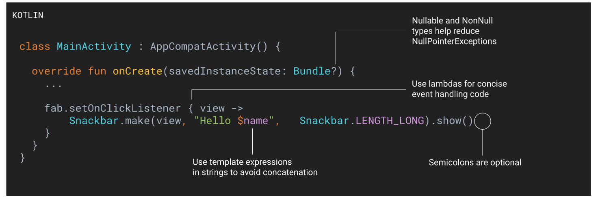

All IT related stuff will be put in here
Winforms vs WPF
The single most important difference between WinForms and WPF is the fact that while WinForms is simply a layer on top of the standard Windows controls (e.g. a TextBox), WPF is built from scratch and doesn't rely on standard Windows controls in almost all situations. This might seem like a subtle difference, but it really isn't, which you will definitely notice if you have ever worked with a framework that depends on Win32/WinAPI.
A great example of this is a button with an image and text on it. This is not a standard Windows control, so WinForms doesn't offer you this possibility out of the box. Instead you will have to draw the image yourself, implement your own button that supports images or use a 3rd party control. With WPF, a button can contain anything because it's essentially a border with content and various states (e.g. untouched, hovered, pressed). The WPF button is "look-less", as are most other WPF controls, which means that it can contain a range of other controls inside of it. You want a button with an image and some text? Just put an Image and a TextBlock control inside of the button and you're done! You simply don’t get this kind of flexibility out of the standard WinForms controls, which is why there's a big market for rather simple implementations of controls like buttons with images and so on.
DOM (Document Object Model)
The Document Object Model (DOM) is an application programming interface (API) for HTML and XML documents. It defines the logical structure of documents and the way a document is accessed and manipulated.
JavaScript
JavaScript is a high-level, dynamic, weakly typed, prototype-based, multi-paradigm, and interpreted programming language. It is commonly used as a part of web pages, whose implementations allow client-side script to interact with the user and make dynamic pages. It is an interpreted programming language with object-oriented capabilities.
jQuery
jQuery is a JavaScript library designed to simplify the scripting of HTML. It is free and open-source. The purpose of jQuery is to make it much easier to use JavaScript on your website. jQuery takes a lot of common tasks that require many lines of JavaScript code to accomplish, and wraps them into methods that you can call with a single line of code. jQuery also simplifies a lot of the complicated things from JavaScript, like AJAX calls and DOM manipulation.
DOM manipulation
Get the element with the class 'continue' and change its HTML to 'Next Step...'
1 | $( "button.continue" ).html( "Next Step..." ) |
Ajax
Call a local script on the server /api/getWeather with the query parameter zipcode=97201 and replace the element #weather-temp's html with the returned text.
1 | $.ajax({ url: "/api/getWeather", data: { zipcode: 97201 }, success: function( result ) { $( "#weather-temp" ).html( "" + result + " degrees" ); } }); |
Package Manager
NuGet focusses mainly on .NET (there are a lot of non-.NET packages on NuGet however), NPM (Node Package Manager), Yarn and Bower are JavaScript package managers.
Yarn was created by Facebook and Open Sourced. Speed comparisons found online show that Yarn is faster than NPM. Yarn is also able to install packages from a cache and does not require a connection to the Internet (only if a package was downloaded before).
What is a Web Server?
a web server is the software that receives your request to access a web page. It runs a few security checks on your HTTP request and takes you to the web page. Depending on the page you have requested, the page may ask the server to run a few extra modules while generating the document to serve you. It then serves you the document you requested.
Apache is the most widely used web server software. Developed and maintained by Apache Software Foundation, Apache is an open source software available for free. It runs on 67% of all webservers in the world. It is fast, reliable, and secure. It can be highly customized to meet the needs of many different environments by using extensions and modules. Most WordPress hosting providers use Apache as their web server software.
A web server like Apache, is also the Maitre D’ of the restaurant. It handles your communications with the website (the kitchen), handles your requests, makes sure that other staff (modules) are ready to serve you. It is also the bus boy, as it cleans the tables (memory, cache, modules) and clears them for new customers.
What is the differences between .NET Framework and .NET Core?
In 2002, Microsoft released .NET Framework 1.0 as a proprietary software framework for Windows platform. It has been updating the .NET Framework regularly to meet the emerging trends in software development. But Microsoft recently redesigned the core architecture of the .NET Framework to simplify development, testing, and deployment of modern software applications. The company released .NET Core 1.0 in June, along with ASP.NET Core 1.0 and Entity Framework.
Unlike .NET Framework, .NET Core is both open source and cross-platform. It further comes with several new features to simplify development and testing of desktop, web, cloud, and mobile applications. Also, it allows developers to deploy the applications in a number of ways. But .NET Core does not support all features and functionalities of .NET Framework. Hence, it becomes essential for developers to understand the major differences between .NET Framework and .NET Core before switching to the most recent version of the popular software framework.
MVC (Model-View-Controller)
Model
* The Model in MVC is a set of classes or project that describe your business logic. It represents all the business logic, like manipulating of data for your business/application, and data access operations like how you connect with database and get the data. In MVC, Model directly communicates with the Controller.
View
The View in MVC are pages which we display to users, i.e., UI part which may consist of HTML, CSS, jQuery, JavaScript, etc. View part is actually completely responsible for displaying data. It takes data from the Controller and also sends back data to the Controller. It does not communicate directly with the Model.
Controller
The Controller in MVC is the base of MVC architecture. Every request comes first to Controller then Controller requests the required information from Model and then it sends that information (data) to View in various formats. It works as a communicator and validator between View and Model.
Framework in Programming
Suppose you have to make a tea on daily basis with several ingredients like sugar, tea leaves , other spices , water etc. In doing so on daily basis most of the time u will find it is really difficult to put all ingredients in right ratio all time, u can forget some times u have to open several boxes one by one , one morning u come up with idea of mixing all ingredients in one jar in one ratio , such that every spoon will serve the right ratio mix to the tea. ( Off course milk and water remain aside)
This jar is your framework. When we want to do lots of things on regular basis it just consumes time and a framework will not only save time it will also provide right components in ur applications. Fast and easy.
What ia a DLL?
A DLL is a library that contains code and data that can be used by more than one program at the same time. For example, in Windows operating systems, the Comdlg32 DLL performs common dialog box related functions. Therefore, each program can use the functionality that is contained in this DLL to implement an Open dialog box. This helps promote code reuse and efficient memory usage. By using a DLL, a program can be modularized into separate components. For example, an accounting program may be sold by module. Each module can be loaded into the main program at run time if that module is installed. Because the modules are separate, the load time of the program is faster, and a module is only loaded when that functionality is requested. Additionally, updates are easier to apply to each module without affecting other parts of the program. For example, you may have a payroll program, and the tax rates change each year. When these changes are isolated to a DLL, you can apply an update without needing to build or install the whole program again.
Kotlin
Kotlin是JetBrains开发的一种新的面向安卓开发的语言，他的第一个正式版本发布与2016年，2019年五月google宣布Kotlin取代Java成为他们偏向的安卓开发语言。Kotlin会不会完全取代Java还不确定，但是学习Kotlin肯定是明智的。我感觉它刚看上去和Swift差不多，都是使用？作为Nullable instance，也取消了句尾的分号。至于Android Studio和Intellij IDEA这两个IDE使用哪个作为安卓开发呢，我觉得Android Studio肯定是面向Andoird更多，如果你的Project需要用到其他语言，javascript，或者server side，可能使用Intellij IDEA会更加好。但是我们随时可以在这两个IDE里切换着来。
Zombie objects

Zombie objects are a wonderful feature of Xcode that every developer should know about. When zombie objects are enabled, any object that is released to a reference count of 0 gets replaced by a zombie object. That way, if during your testing an object thats been released gets sent a message, a helpful logging message appears after the program crashes. Now, anytime a dealloc’ed object gets sent a message during testing, you’ll know about it! However, make sure that when its time to release the application you disable (un-tick the checkbox) Zombie Objects.
Web server security
HSTS enforces the use of HTTPS through a policy that requires support from both web servers and browsers. An HSTS enabled web host can include a special HTTP response header "Strict-Transport-Security" (STS) along with a "max-age" directive in an HTTPS response to request the browser to use HTTPS for further communication. The browser receives the header, and memorizes the HSTS policy for the number of seconds specified by the “max-age” directive. Within this period, if an user tries to visit the same website but types http:// or omits the scheme at all, the browser will automatically turn the insecure link to the secure one (https://) and make an HTTPS connection to the server. Once a response is received through HTTPS, the browser also prevents the user from “clicking through” any security warning (e.g. a warning about an invalid server certificate). In order to take advantage of HSTS, the browser has to see the HSTS header at least once. To protect the user in the first connection to a given domain, HSTS has a separate mechanism to preload a list of registered domains to the browser out of the box.
SSL and TLS are cryptographic protocols that provide authentication and data encryption between different endpoints (e.g., a client connecting to a web server), with SSL the predecessor to TLS. As a best practice, you should configure your servers to support the latest protocol versions to ensure you are using only the strongest algorithms and ciphers, but equally as important is to disable the older versions. the browsers are officially removing support for TLS versions 1.0 and 1.1
Steps on how to disable TLS on IIS or AWS load balancer is listed below.
Steps on how to setup anti-CSRF for form or ajax post request is listed below.